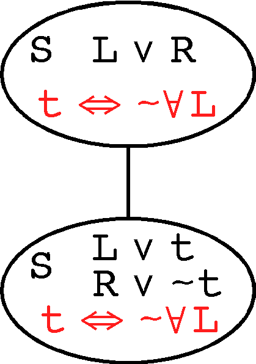

Verifying Pseudo Split Formulae

Inference Rule
- Replaces L ∨ R by
{ L ∨ t, R ∨ ~t }
- Effect is to add a definition
t ⇔ ~∀L
Semantic Verification
- Discharge { L ∨ t, R ∨ ~t } |= L ∨ R,
with relevance check
- Discharge { L ∨ R, t ⇔ ~∀L} |= L ∨ t
- Discharge { L ∨ R, t ⇔ ~∀L} |= R ∨ ~t
Variants and Extensions